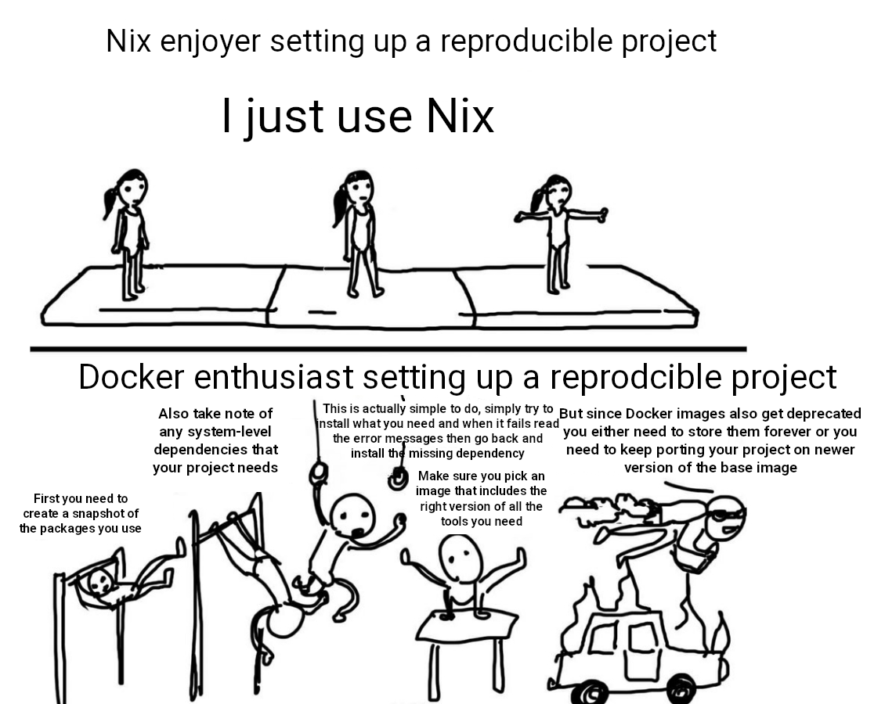

Reproducible data science with Nix, part 6 – CI/CD has never been easier

Warning: I highly recommend you read this blog post first, which will explain how to run a pipeline inside Nix in detail. This blog post will assume that you’ve read that one, and it would also help if you’re familiar with Github Actions, if not, read this other blog post of mine as well
This is getting ridiculous. The meme that I’m using as a header for this blog post perfectly summaries how I feel.
This will be a short blog post, because Nix makes things so easy that there’s not much to say. I wanted to try how I could use Nix on Github Actions to run a reproducible pipeline. This pipeline downloads some data, prepares it, and fits a machine learning model. It is code that I had laying around from an old video on the now deprecated {drake} package, {targets} predecessor.
You can find the pipeline here and you can also take a look at the same pipeline but which uses Docker here for comparison purposes.
What I wanted to achieve was the following: I wanted to set up a reproducible environment with Nix on my computer, work on my pipeline locally, and then have it run on Github Actions as well. But I wanted my pipeline to run exactly on the same environment as the one I was using to develop it. In a world without Nix, this means using a mix of {renv} (or {groundhog} or {rang}) and a Docker image that ships the right version of R. I would then need to write a Github Actions workflow file that builds that Docker image, then runs it and saves the outputs as artifacts. Also, in practice that image would not be exactly the same as my local environment: I would have the same version of R and R packages, but every other system-level dependency would be a different version unless I use that Dockerized environment to develop locally, something I suggested you should do merely 4 months ago (oooh, how blind was I!).
With Nix, not only can I take care of the version of R and R packages with one single tool but also every underlying system-level dependency gets handled by Nix. So if I use a package that requires, say, Java, or GDAL, or any other of these usual suspects that make installing their R bindings so tricky, Nix will handle this for me without any intervention on my part. I can also use this environment to develop locally, and then, once I’m done working locally, exactly this environment, exactly every bit of that environment, will get rebuilt and used to run my code on Github Actions.
So this is the repository where you can find the code. There’s a {targets} script that defines the pipeline and a functions/ folder with some code that I wrote for said pipeline. What’s unfamiliar to you (unless you’ve been reading my Nix adventures since the beginning) is the default.nix file:
let
pkgs = import (fetchTarball "https://github.com/NixOS/nixpkgs/archive/976fa3369d722e76f37c77493d99829540d43845.tar.gz") {};
rpkgs = builtins.attrValues {
inherit (pkgs.rPackages) tidymodels vetiver targets xgboost;
};
system_packages = builtins.attrValues {
inherit (pkgs) R;
};
in
pkgs.mkShell {
buildInputs = [ rpkgs system_packages ];
}
This few lines of code define an environment that pulls packages from revision 976fa3369d722e76f37c77493d99829540d43845 of nixpkgs. It installs the packages {tidymodels}, {vetiver}, {targets} and {xgboost} (actually, I’m not using {vetiver} for this yet, so it could even be removed). Then it also installs R. Because we’re using that specific revision of Nix, exactly the same packages (and their dependencies) will get installed, regardless of when we build this environment. I want to insist that this file is 12 lines long and it defines a complete environment. The equivalent Dockerfile is much longer, and not even completely reproducible, and I would have needed external tools like {renv} (or use the Posit CRAN mirror dated snapshots) as you can check out here.
Let’s now turn our attention to the workflow file:
name: train_model
on:
push:
branches: [main]
jobs:
targets:
runs-on: ubuntu-latest
env:
GITHUB_PAT: ${{ secrets.GITHUB_TOKEN }}
steps:
- uses: actions/checkout@v3
- name: Install Nix
uses: DeterminateSystems/nix-installer-action@main
with:
logger: pretty
log-directives: nix_installer=trace
backtrace: full
- name: Nix cache
uses: DeterminateSystems/magic-nix-cache-action@main
- name: Build development environment
run: |
nix-build
- name: Check if previous runs exists
id: runs-exist
run: git ls-remote --exit-code --heads origin targets-runs
continue-on-error: true
- name: Checkout previous run
if: steps.runs-exist.outcome == 'success'
uses: actions/checkout@v2
with:
ref: targets-runs
fetch-depth: 1
path: .targets-runs
- name: Restore output files from the previous run
if: steps.runs-exist.outcome == 'success'
run: |
nix-shell default.nix --run "Rscript -e 'for (dest in scan(\".targets-runs/.targets-files\", what = character())) {
source <- file.path(\".targets-runs\", dest)
if (!file.exists(dirname(dest))) dir.create(dirname(dest), recursive = TRUE)
if (file.exists(source)) file.rename(source, dest)
}'"
- name: Run model
run: |
nix-shell default.nix --run "Rscript -e 'targets::tar_make()'"
- name: Identify files that the targets pipeline produced
run: git ls-files -mo --exclude=renv > .targets-files
- name: Create the runs branch if it does not already exist
if: steps.runs-exist.outcome != 'success'
run: git checkout --orphan targets-runs
- name: Put the worktree in the runs branch if the latter already exists
if: steps.runs-exist.outcome == 'success'
run: |
rm -r .git
mv .targets-runs/.git .
rm -r .targets-runs
- name: Upload latest run
run: |
git config --local user.name "GitHub Actions"
git config --local user.email "actions@github.com"
rm -r .gitignore .github/workflows
git add --all -- ':!renv'
for file in $(git ls-files -mo --exclude=renv)
do
git add --force $file
done
git commit -am "Run pipeline"
git push origin targets-runs
- name: Prepare failure artifact
if: failure()
run: rm -rf .git .github .targets-files .targets-runs
- name: Post failure artifact
if: failure()
uses: actions/upload-artifact@main
with:
name: ${{ runner.os }}-r${{ matrix.config.r }}-results
path: .
The workflow file above is heavily inspired from the one you get when you run targets::tar_github_actions(). Running this puts the following file on the root of your {targets} project. This file is a Github Actions workflow file, which means that each time you push your code on Github, the pipeline will run in the cloud. However it needs you to use {renv} with the project so that the right packages get installed. You’ll also see a step called Install Linux dependencies which you will have to adapt to your project.
All of this can be skipped when using Nix. All that must be done is installing Nix itself, using the nix-installer-action from Determinate Systems, then using the magic-nix-cache-action which caches the downloaded packages so we don’t need to wait for the environment to build each time we push (unless we changed the environment of course) and that’s about it. We then build the environment on Github Actions using nix-build and then run the pipeline using nix-shell default.nix –run “Rscript -e ‘targets::tar_make()’”. All the other steps are copied almost verbatim from the linked file above and make sure that the computed targets only get recomputed if I edit anything that impacts them, and also that they get pushed into a branch called targets-runs. I say copied almost verbatim because some steps must run inside R, so we need to specify that we want to use the R that is available through the Nix environment we just built.
Now, each time we push, the following happens:
-
if we didn’t change anything to
default.nix, the environment gets retrieved from the cache. If we did change something, then environment gets rebuilt (or rather, only the parts that need to be rebuilt, the rest will still get retrieved from the cache) -
if we didn’t change anything to the
_targets.Rpipeline itself, then every target will get skipped. If not, only the targets that need to get recomputed will get recomputed.
One last thing that I didn’t mention: on line 9 you’ll see this:
runs-on: ubuntu-latest
this means that the Github Actions will run on the latest available version of Ubuntu, which is obviously not fixed. When the next LTS gets released in April 2024, this pipeline will be running on Ubuntu 24.04 instead of the current LTS, version 22.04. This is not good practice because we don’t want the underlying operating system to be changing, because this could have an impact on the reproducibility of our pipeline. But with Nix, this does not matter. Remember that we are using a specific revision of nixpkgs for our pipeline, so the exact same version of not only R and R packages gets installed, but every underlying piece of software that needs to be available will be installed as well. We could be running this in 50 years on Ubuntu LTS 74.04 and it would still install the same stuff and run the same code and produce exactly the same results.
This is really bonkers.
Nix is an incredibly powerful tool. I’ve been exploring and using it for 3 months now, but if something impresses me more than how useful it is, is how terribly unknown it still is. I hope that this series of blog posts will motivate other people to learn it.